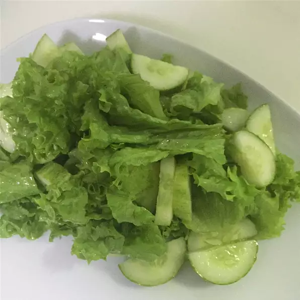

Sugar Salad

Description of Dish
This dish is a sweet and sour salad that should take a total of 10 minutes to put together. This salad will provide 4 servings.
Ingredients
- 1/4 cup vegetable oil
- 2 tablespoons apple cider vinegar
- 2 tablespoons white sugar
- 1 head green leaf lettuce, torn into bite-size pieces
Steps
- Whisk the vegetable oil, vinegar, and sugar in a small bowl. Place the lettuce in a large bowl.
Drizzle the oil mixture over the lettuce and toss to coat.